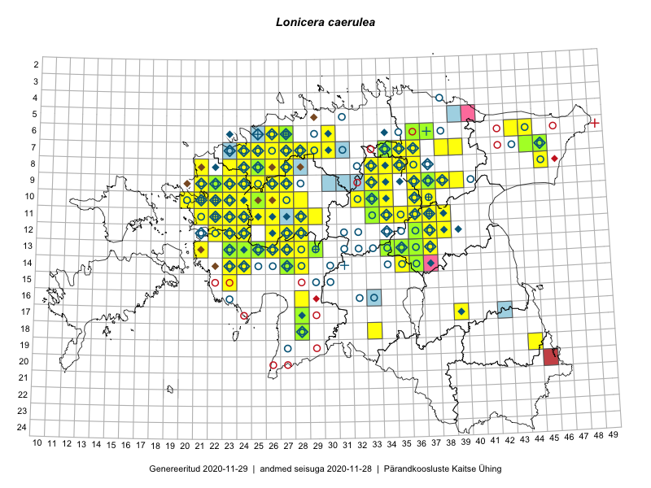

Lonicera caerulea — sinine kuslapuu
Kaardile koondatud taksonid: Lonicera caerulea L. (216); Lonicera coerulea auct. (1)

Kaart põhineb 217 kirjel, neist:
vaatlusi 191
eksemplare 26
Kaasaegsed1 leiukohad asuvad 107 ruudus.
Andmed “Eesti taimede levikuatlasest”,2 sulgudes ruutude arv:3
● 1971–2005 (80)
○ 1921–1970 (63)
△ kuni 1920 (1)
+ hävinud (0)
? kaheldav (0)
Lisaruudud teistest andmebaasidest:4
ELF: 2006– . . . (10)
PKÜ: 2006– . . . (6)
ELF: 1971–2005 (4)
PKÜ: 1997–2005 (12)
| Ruut | Vaatleja(d) | Vaatlusaeg | Kirje PlutoFis |
|---|---|---|---|
| 12-28 | Tiit Hallikma, Toomas Kukk, Indrek Tammekänd | 2015-06-09 | ruut/ala: Lonicera caerulea L. |
| 11-35 | Ott Luuk, Peedu Saar | 2015-07-27 | ruut/ala: Lonicera caerulea L. |
| 10-33 | Peedu Saar, Liina Oja | 2015-06-08 | ruut/ala: Lonicera caerulea L. |
| 08-45 | Peedu Saar, Liina Oja | 2015-07-22 | ruut/ala: Lonicera caerulea L. |
| 19-40 | Malle Leht | 2015-07-18 | ruut/ala: Lonicera caerulea L. |
| 14-27 | Tiit Hallikma, Toomas Kukk, Indrek Tammekänd | 2015-06-08 | ruut/ala: Lonicera caerulea L. |
| 07-44 | Tiit Hallikma, Toomas Kukk | 2015-07-20 | ruut/ala: Lonicera caerulea L. |
| 12-24 | Tiit Hallikma, Toomas Kukk | 2015-08-24 | ruut/ala: Lonicera caerulea L. |
| 14-28 | Ott Luuk, Hannes Pehlak | 2015-06-10 | ruut/ala: Lonicera caerulea L. |
| 13-37 | Eeva-Maria Jeletsky, Tarmo Niitla | 2015-05-17 | ruut/ala: Lonicera caerulea L. |
| 10-22 | Toomas Kukk, Thea Kull | 2014-08-21 | ruut/ala: Lonicera caerulea L. |
| 11-22 | Toomas Kukk, Thea Kull | 2014-08-21 | ruut/ala: Lonicera caerulea L. |
| 10-23 | Toomas Kukk, Thea Kull | 2014-08-22 | ruut/ala: Lonicera caerulea L. |
| 14-24 | Toomas Kukk, Ott Luuk, Sander Laherand | 2014-08-24 | ruut/ala: Lonicera caerulea L. |
| 07-34 | Jana-Maria Habicht, Ester Valdvee | 2015-07-20 | ruut/ala: Lonicera caerulea L. |
| 07-29 | Toomas Kukk, Thea Kull | 2014-08-20 | ruut/ala: Lonicera caerulea L. |
| 08-34 | Jana-Maria Habicht, Ester Valdvee | 2015-06-28 | ruut/ala: Lonicera caerulea L. |
| 08-35 | Jana-Maria Habicht, Ester Valdvee, Kirke Pilvik | 2015-07-14 | ruut/ala: Lonicera caerulea L. |
| 09-34 | Jana-Maria Habicht, Ester Valdvee, Kirke Pilvik | 2015-07-25 | ruut/ala: Lonicera caerulea L. |
| 09-36 | Jana-Maria Habicht, Ester Valdvee, Tiiu Liimets | 2015-07-07 | ruut/ala: Lonicera caerulea L. |
| 09-36 | Jana-Maria Habicht, Ester Valdvee, Tiiu Liimets | 2015-07-07 | ruut/ala: Lonicera caerulea L. |
| 09-36 | Jana-Maria Habicht, Ester Valdvee | 2015-08-15 | ruut/ala: Lonicera caerulea L. |
| 19-44 | Thea Kull, Meeli Mesipuu | 2015-08-12 | ruut/ala: Lonicera caerulea L. |
| 12-22 | Ott Luuk, Peedu Saar | 2015-08-24 | ruut/ala: Lonicera caerulea L. |
| 11-29 | Ott Luuk, Toivo Sepp | 2015-08-20 | ruut/ala: Lonicera caerulea L. |
| 13-23 | Ott Luuk, Peedu Saar | 2014-08-29 | ruut/ala: Lonicera caerulea L. |
| 15-23 | Maret Gerz, Leena Gerz | 2015-08-15 | ruut/ala: Lonicera caerulea L. |
| 11-37 | Ülle Jõgar, Illi Tarmu, K. Rünk | 2015-07-24 | ruut/ala: Lonicera caerulea L. |
| 13-36 | Toivo Sepp, Eerik Leibak | 2015-05-13 | ruut/ala: Lonicera caerulea L. |
| 06-43 | Meeli Mesipuu, Liina Oja | 2015-04-26 | ruut/ala: Lonicera caerulea L. |
| 18-42 | Kirsi Loide, Marje Loide | 2015-07-28 | ruut/ala: Lonicera caerulea L. |
| 13-36 | Meeli Mesipuu, Timo Luhamäe | 2015-06-12 | ruut/ala: Lonicera caerulea L. |
| 06-26 | Mari Metsoja, Jaak-Albert Metsoja | 2015-07-29 | ruut/ala: Lonicera caerulea L. |
| 12-28 | Ott Luuk, Peedu Saar | 2014-08-29 | ruut/ala: Lonicera caerulea L. |
| 09-33 | Peedu Saar, Ott Luuk | 2014-08-05 | ruut/ala: Lonicera caerulea L. |
| 09-26 | Peedu Saar, Kersti Püssa, Rein Kalamees, Toomas Kukk | 2014-06-11 | ruut/ala: Lonicera caerulea L. |
| 13-24 | Marek Sammul, Ott Luuk | 2014-06-21 | ruut/ala: Lonicera caerulea L. |
| 09-25 | Thea Kull, Meeli Mesipuu, Eerik Leibak | 2014-06-11 | ruut/ala: Lonicera caerulea L. |
| 10-25 | Ott Luuk, Jaak-Albert Metsoja, Maret Gerz | 2014-06-11 | ruut/ala: Lonicera caerulea L. |
| 10-26 | Jaak-Albert Metsoja, Ott Luuk, Maret Gerz | 2014-06-11 | ruut/ala: Lonicera caerulea L. |
| 08-27 | Ott Luuk | 2014-08-27 | ruut/ala: Lonicera caerulea L. |
| 09-22 | Ott Luuk, Peedu Saar, Maret Gerz | 2014-08-21 | ruut/ala: Lonicera caerulea L. |
| 06-26 | Peedu Saar, Ott Luuk | 2014-09-03 | ruut/ala: Lonicera caerulea L. |
| 11-21 | Hanna-Eliisa Luts, Tõnu Ploompuu | 2015-08-13 | ruut/ala: Lonicera caerulea L. |
| 11-25 | Hanna-Eliisa Luts, Tõnu Ploompuu | 2015-07-28 | ruut/ala: Lonicera caerulea L. |
| 10-20 | Tõnu Ploompuu, Anna-Grete Rebane, Hanna-Eliisa Luts | 2015-07-20 | ruut/ala: Lonicera caerulea L. |
| 10-24 | Hanna-Eliisa Luts, Tõnu Ploompuu, Anna-Grete Rebane | 2015-07-19 | ruut/ala: Lonicera caerulea L. |
| 11-22 | Tõnu Ploompuu | 2015-08-21 | ruut/ala: Lonicera caerulea L. |
| 11-23 | Hanna-Eliisa Luts, Marian Hiie, Tõnu Ploompuu | 2015-08-04 | ruut/ala: Lonicera caerulea L. |
| 10-22 | Tõnu Ploompuu | 2015-08-21 | ruut/ala: Lonicera caerulea L. |
| 11-28 | Hanna-Eliisa Luts, Tõnu Ploompuu | 2015-07-21 | ruut/ala: Lonicera caerulea L. |
| 09-21 | Kadi-Liis Kesler, Tõnu Ploompuu | 2015-07-14 | ruut/ala: Lonicera caerulea L. |
| 12-26 | Andrus Jair, Tõnu Ploompuu | 2015-05-17 | ruut/ala: Lonicera caerulea L. |
| 08-24 | Sirje Lagle, Tõnu Ploompuu | 2015-08-18 | ruut/ala: Lonicera caerulea L. |
| 09-21 | Sirje Lagle, Tõnu Ploompuu | 2015-05-16 | ruut/ala: Lonicera caerulea L. |
| 09-22 | Sirje Lagle, Tõnu Ploompuu | 2015-05-15 | ruut/ala: Lonicera caerulea L. |
| 07-28 | Meeli Mesipuu, Thea Kull | 2016-06-02 | ruut/ala: Lonicera caerulea L. |
| 07-26 | Meeli Mesipuu, Thea Kull | 2016-06-03 | ruut/ala: Lonicera caerulea L. |
| 10-21 | Tõnu Ploompuu | 2015-05-02 | ruut/ala: Lonicera caerulea L. |
| 10-21 | Tõnu Ploompuu | 2015-08-21 | ruut/ala: Lonicera caerulea L. |
| 10-22 | Tõnu Ploompuu | 2015-05-20 | ruut/ala: Lonicera caerulea L. |
| 10-23 | Sirje Lagle, Tõnu Ploompuu | 2015-05-15 | ruut/ala: Lonicera caerulea L. |
| 11-37 | Eeva-Maria Jeletsky, Tarmo Niitla | 2016-06-09 | ruut/ala: Lonicera caerulea L. |
| 13-26 | Thea Kull | 2016-06-22 | ruut/ala: Lonicera caerulea L. |
| 13-25 | Thea Kull | 2016-06-22 | ruut/ala: Lonicera caerulea L. |
| 07-24 | Thea Kull, Helle Mäemets | 2016-07-07 | ruut/ala: Lonicera caerulea L. |
| 13-24 | Indrek Tammekänd, Jana Galadi | 2016-05-17 | ruut/ala: Lonicera caerulea L. |
| 14-28 | Thea Kull, Tiit Hallikma | 2016-07-08 | ruut/ala: Lonicera caerulea L. |
| 06-26 | Tiina Elvisto, Eerik Leibak | 2016-07-04 | ruut/ala: Lonicera caerulea L. |
| 14-23 | Thea Kull, Eerik Leibak | 2016-07-05 | ruut/ala: Lonicera caerulea L. |
| 13-28 | Thea Kull, Tiit Hallikma | 2016-07-08 | ruut/ala: Lonicera caerulea L. |
| 12-28 | Mari Reitalu, Eerik Leibak | 2016-07-06 | ruut/ala: Lonicera caerulea L. |
| 08-23 | Aat Sarv, Helle Mäemets | 2016-07-08 | ruut/ala: Lonicera caerulea L. |
| 12-38 | Ulvi Selgis | 2016-06-22 | ruut/ala: Lonicera caerulea L. |
| 12-37 | Eeva-Maria Jeletsky, Tarmo Niitla | 2016-07-22 | ruut/ala: Lonicera caerulea L. |
| 10-34 | Mari Metsoja, Eerik Leibak | 2016-07-21 | ruut/ala: Lonicera caerulea L. |
| 10-33 | Mari Metsoja, Eerik Leibak | 2016-07-21 | ruut/ala: Lonicera caerulea L. |
| 07-38 | Liina Oja, Eerik Leibak | 2016-07-28 | ruut/ala: Lonicera caerulea L. |
| 09-38 | Ott Luuk, Eerik Leibak | 2016-08-08 | ruut/ala: Lonicera caerulea L. |
| 09-39 | Ott Luuk, Eerik Leibak | 2016-08-09 | ruut/ala: Lonicera caerulea L. |
| 14-23 | Erkki Otsman, Sergei Smirnov | 2016-06-22 | ruut/ala: Lonicera caerulea L. |
| 08-36 | Thea Kull, Timo Luhamäe | 2016-07-27 | ruut/ala: Lonicera caerulea L. |
| 13-26 | Maret Gerz, Liina Oja | 2016-07-08 | ruut/ala: Lonicera caerulea L. |
| 11-21 | Aat Sarv, Maret Gerz | 2016-07-07 | ruut/ala: Lonicera caerulea L. |
| 11-23 | Aat Sarv, Maret Gerz | 2016-07-06 | ruut/ala: Lonicera caerulea L. |
| 10-23 | Aat Sarv, Maret Gerz | 2016-07-06 | ruut/ala: Lonicera caerulea L. |
| 13-21 | Aat Sarv, Maret Gerz | 2016-07-05 | ruut/ala: Lonicera caerulea L. |
| 14-24 | Aat Sarv, Oliver Parrest | 2016-07-18 | ruut/ala: Lonicera caerulea L. |
| 06-30 | Toomas Kukk, Sander Laherand | 2016-08-30 | ruut/ala: Lonicera caerulea L. |
| 12-24 | Sirje Azarov, Meeli Mesipuu | 2016-07-05 | ruut/ala: Lonicera caerulea L. |
| 10-25 | Sirje Azarov, Meeli Mesipuu | 2016-07-06 | ruut/ala: Lonicera caerulea L. |
| 10-22 | Sirje Azarov, Oliver Parrest | 2016-07-07 | ruut/ala: Lonicera caerulea L. |
| 11-22 | Sirje Azarov, Oliver Parrest | 2016-07-07 | ruut/ala: Lonicera caerulea L. |
| 07-30 | Toomas Kukk, Peedu Saar | 2016-09-09 | ruut/ala: Lonicera caerulea L. |
| 07-35 | Toomas Kukk, Sander Laherand, Nele Jõessar | 2016-07-27 | ruut/ala: Lonicera caerulea L. |
| 09-37 | Mari Reitalu, Triin Reitalu | 2016-07-11 | ruut/ala: Lonicera caerulea L. |
| 09-27 | Rein Kalamees, Liina Oja | 2016-07-06 | ruut/ala: Lonicera caerulea L. |
| 10-24 | Helle Mäemets, Tiina Elvisto | 2016-07-06 | ruut/ala: Lonicera caerulea L. |
| 08-25 | Helle Mäemets, Tiina Elvisto | 2016-07-05 | ruut/ala: Lonicera caerulea L. |
| 07-25 | Helle Mäemets, Tiina Elvisto | 2016-07-05 | ruut/ala: Lonicera caerulea L. |
| 09-36 | Peedu Saar, Liina Oja, Susanna Vain | 2016-07-25 | ruut/ala: Lonicera caerulea L. |
| 10-37 | Peedu Saar, Liina Oja, Susanna Vain | 2016-07-25 | ruut/ala: Lonicera caerulea L. |
| 11-34 | Peedu Saar, Timo Luhamäe | 2016-07-21 | ruut/ala: Lonicera caerulea L. |
| 10-28 | Peedu Saar, Timo Luhamäe, Johannes Kõdar | 2016-07-06 | ruut/ala: Lonicera caerulea L. |
| 13-27 | Peedu Saar, Timo Luhamäe | 2016-07-08 | ruut/ala: Lonicera caerulea L. |
| 14-27 | Peedu Saar, Timo Luhamäe | 2016-07-08 | ruut/ala: Lonicera caerulea L. |
| 09-33 | Ott Luuk, Eerik Leibak | 2016-07-25 | ruut/ala: Lonicera caerulea L. |
| 13-35 | Ott Luuk, Hannes Pehlak | 2016-07-22 | ruut/ala: Lonicera caerulea L. |
| 16-28 | Ott Luuk, Liina Oja | 2016-07-20 | ruut/ala: Lonicera caerulea L. |
| 07-39 | Meeli Mesipuu, Liina Oja | 2016-07-29 | ruut/ala: Lonicera caerulea L. |
| 18-28 | Toivo Sepp, Liina Oja | 2016-07-19 | ruut/ala: Lonicera caerulea L. |
| 11-36 | Meeli Mesipuu, Timo Luhamäe | 2016-07-25 | ruut/ala: Lonicera caerulea L. |
| 10-36 | Meeli Mesipuu, Timo Luhamäe | 2016-07-25 | ruut/ala: Lonicera caerulea L. |
| 12-23 | Meeli Mesipuu, Maret Gerz | 2015-08-24 | ruut/ala: Lonicera caerulea L. |
| 12-27 | Jaak-Albert Metsoja, Mari Metsoja | 2016-07-05 | ruut/ala: Lonicera caerulea L. |
| 07-26 | Jaak-Albert Metsoja, Mari Metsoja | 2016-07-04 | ruut/ala: Lonicera caerulea L. |
| 09-36 | Herdis Fridolin | 2015-07-29 | ruut/ala: Lonicera caerulea L. |
| 12-28 | Ott Luuk | 2017-05-28 | ruut/ala: Lonicera caerulea L. |
| 11-34 | Thea Kull, Ott Luuk | 2017-08-03 | ruut/ala: Lonicera caerulea L. |
| 08-27 | Mari Reitalu, Eerik Leibak | 2017-08-08 | ruut/ala: Lonicera caerulea L. |
| 12-27 | Mari Reitalu, Eerik Leibak | 2017-08-09 | ruut/ala: Lonicera caerulea L. |
| 12-26 | Mari Reitalu, Eerik Leibak | 2017-08-09 | ruut/ala: Lonicera caerulea L. |
| 08-26 | Toomas Kukk, Ilmar Uibopuu, Kadri Kuusksalu | 2017-08-08 | ruut/ala: Lonicera caerulea L. |
| 09-24 | Mari Reitalu, Eerik Leibak | 2017-08-11 | ruut/ala: Lonicera caerulea L. |
| 07-26 | Toomas Kukk, Ilmar Uibopuu, Kadri Kuusksalu | 2017-08-08 | ruut/ala: Lonicera caerulea L. |
| 11-24 | Eerik Leibak, Toomas Kukk | 2017-08-10 | ruut/ala: Lonicera caerulea L. |
| 14-36 | Ott Luuk | 2017-08-15 | ruut/ala: Lonicera caerulea L. |
| 07-25 | Mari Reitalu, Indrek Tammekänd | 2017-08-10 | ruut/ala: Lonicera caerulea L. |
| 10-24 | Peedu Saar, Toomas Kukk | 2017-09-07 | ruut/ala: Lonicera caerulea L. |
| 10-21 | Peedu Saar, Toomas Kukk | 2017-09-07 | ruut/ala: Lonicera caerulea L. |
| 11-23 | Peedu Saar, Toomas Kukk | 2017-09-07 | ruut/ala: Lonicera caerulea L. |
| 14-28 | Ott Luuk, Indrek Tammekänd | 2017-08-11 | ruut/ala: Lonicera caerulea L. |
| 11-28 | Ott Luuk, Thea Kull | 2017-08-08 | ruut/ala: Lonicera caerulea L. |
| 07-28 | Peedu Saar, Timo Luhamäe | 2017-08-08 | ruut/ala: Lonicera caerulea L. |
| 07-27 | Peedu Saar, Timo Luhamäe | 2017-08-08 | ruut/ala: Lonicera caerulea L. |
| 13-28 | Indrek Tammekänd, Kadri Hänni, Tuuli Teppo | 2015-07-22 | ruut/ala: Lonicera caerulea L. |
| 14-35 | Peedu Saar | 2017-08-15 | ruut/ala: Lonicera caerulea L. |
| 13-37 | Eeva-Maria Jeletsky, Tarmo Niitla | 2015-05-17 | punkt: Lonicera caerulea L. |
| 09-36 | Jana-Maria Habicht, Ester Valdvee, Tiiu Liimets | 2015-07-07 | punkt: Lonicera caerulea L. |
| 08-35 | Jana-Maria Habicht, Ester Valdvee | 2015-07-15 | punkt: Lonicera caerulea L. |
| 13-23 | Kirsi Loide, Marje Loide | 2015-08-30 | punkt: Lonicera caerulea L. |
| 09-27 | Liina Oja, Rein Kalamees | 2016-07-06 | punkt: Lonicera caerulea L. |
| 12-37 | Eeva-Maria Jeletsky, Tarmo Niitla | 2016-07-22 | punkt: Lonicera caerulea L. |
| 07-36 | Karin Kikas, Elle Rajandu | 2016-06-27 | punkt: Lonicera caerulea L. |
| 16-28 | Liina Oja, Ott Luuk | 2016-07-20 | punkt: Lonicera caerulea L. |
| 16-28 | Liina Oja, Ott Luuk | 2016-07-20 | punkt: Lonicera caerulea L. |
| 10-25 | Meeli Mesipuu, Sirje Azarov | 2016-07-06 | punkt: Lonicera caerulea L. |
| 10-16 | Meeli Mesipuu, Maret Gerz | 2016-08-09 | ruut/ala: Lonicera caerulea L. |
| 09-26 | Ott Luuk, Peedu Saar | 2016-09-05 | punkt: Lonicera caerulea L. |
| 09-39 | Ott Luuk, Eerik Leibak | 2016-08-09 | punkt: Lonicera caerulea L. |
| 09-38 | Ott Luuk, Eerik Leibak | 2016-08-08 | punkt: Lonicera caerulea L. |
| 12-28 | Ott Luuk | 2017-05-28 | punkt: Lonicera caerulea L. |
| 14-35 | Peedu Saar | 2017-08-15 | punkt: Lonicera caerulea L. |
| 11-34 | Ott Luuk, Thea Kull | 2017-08-03 | punkt: Lonicera caerulea L. |
| 07-45 | Meeli Mesipuu | 2017-07-25 | punkt: Lonicera caerulea L. |
| 07-45 | Meeli Mesipuu | 2017-07-25 | ruut/ala: Lonicera caerulea L. |
| 07-45 | Rein Kalamees, Kersti Püssa | 2017-06-16 | ruut/ala: Lonicera caerulea L. |
| 08-23 | Toomas Kukk, Timo Luhamäe | 2012-07-09 | punkt: Lonicera caerulea L. |
| 08-27 | Mari Reitalu, Sirje Azarov | 2018-07-01 | ruut/ala: Lonicera caerulea L. |
| 09-27 | Mari Reitalu, Sirje Azarov | 2018-07-01 | ruut/ala: Lonicera caerulea L. |
| 11-33 | Ott Luuk, Toivo Sepp | 2018-08-22 | ruut/ala: Lonicera caerulea L. |
| 11-33 | Ott Luuk, Toivo Sepp | 2018-08-22 | punkt: Lonicera caerulea L. |
| 10-27 | Ott Luuk, Toivo Sepp | 2018-08-21 | punkt: Lonicera caerulea L. |
| 11-28 | Ott Luuk, Toivo Sepp | 2018-08-24 | ruut/ala: Lonicera caerulea L. |
| 09-37 | Rein Kalamees | 2018-09-07 | ruut/ala: Lonicera caerulea L. |
| 08-27 | Ott Luuk, Thea Kull | 2018-09-06 | ruut/ala: Lonicera caerulea L. |
| 10-22 | Meeli Mesipuu | 2018-07-18 | ruut/ala: Lonicera caerulea L. |
| 14-27 | Meeli Mesipuu | 2015-07-14 | punkt: Lonicera caerulea L. |
| 11-26 | Thea Kull | 2019-08-17 | ruut/ala: Lonicera caerulea L. |
| 17-39 | Thea Kull | 2019-07-23 | ruut/ala: Lonicera caerulea L. |
| 07-25 | Rein Kalamees | 2019-08-27 | ruut/ala: Lonicera caerulea L. |
| 07-35 | Toomas Kukk, Rein Kalamees, Kaur Maran | 2019-08-07 | ruut/ala: Lonicera caerulea L. |
| 07-34 | Toomas Kukk, Rein Kalamees, Kaur Maran | 2019-08-07 | ruut/ala: Lonicera caerulea L. |
| 12-36 | Ott Luuk, Eerik Leibak | 2019-08-27 | ruut/ala: Lonicera caerulea L. |
| 10-22 | Toomas Kukk, Peedu Saar | 2019-09-19 | ruut/ala: Lonicera caerulea L. |
| 09-22 | Peedu Saar | 2019-08-16 | ruut/ala: Lonicera caerulea L. |
| 08-21 | Peedu Saar | 2019-07-26 | ruut/ala: Lonicera caerulea L. |
| 07-45 | Thea Kull, Toomas Kukk | 2019-09-12 | ruut/ala: Lonicera caerulea L. |
| 11-36 | Peedu Saar | 2019-08-10 | ruut/ala: Lonicera caerulea L. |
| 11-36 | Peedu Saar | 2019-08-10 | ruut/ala: Lonicera caerulea L. |
| 10-36 | Peedu Saar, Timo Luhamäe | 2019-08-08 | ruut/ala: Lonicera caerulea L. |
| 06-44 | Ott Luuk, Meeli Mesipuu | 2019-09-11 | ruut/ala: Lonicera caerulea L. |
| 12-36 | Ott Luuk, Eerik Leibak | 2019-08-27 | punkt: Lonicera caerulea L. |
| 09-23 | Ott Luuk | 2019-09-03 | ruut/ala: Lonicera caerulea L. |
| 09-22 | Ott Luuk | 2019-09-03 | ruut/ala: Lonicera caerulea L. |
| 08-33 | Ott Luuk, Jaak-Albert Metsoja | 2019-08-08 | ruut/ala: Lonicera caerulea L. |
| 08-33 | Ott Luuk, Jaak-Albert Metsoja | 2019-08-08 | punkt: Lonicera caerulea L. |
| 10-32 | Ott Luuk | 2019-07-31 | punkt: Lonicera caerulea L. |
| 10-32 | Ott Luuk | 2019-07-31 | ruut/ala: Lonicera caerulea L. |
| 06-44 | Meeli Mesipuu, Ott Luuk | 2019-09-11 | punkt: Lonicera caerulea L. |
| 11-36 | Indrek Tammekänd, Jaak Tammekänd, Agu Leivits, Meelis Leivits, Alar Soppe, Triin Leetmaa, Margus Pensa | 2018-05-25 | ruut/ala: Lonicera caerulea L. |
| 06-36 | Toomas Kukk | 2006-09-11 | TAA0034229: Lonicera caerulea L. |
| 09-37 | Toomas Kukk | 2006-07-17 | TAA0034230: Lonicera caerulea L. |
| 09-22 | Toomas Kukk | 2006-06-19 | TAA0077729: Lonicera caerulea L. |
| 09-22 | Toomas Kukk | 2006-06-19 | TAA0077730: Lonicera caerulea L. |
| 10-33 | Peedu Saar, Liina Oja | 2015-06-08 | TAA0116557: Lonicera caerulea L. |
| 14-36 | Peedu Saar | 2015-08-04 | TAA0116558: Lonicera caerulea L. |
| 13-35 | Peedu Saar, Liina Oja | 2015-06-12 | TAA0116559: Lonicera caerulea L. |
| 07-34 | Jana-Maria Habicht | 2015-07-20 | TAM0117573: Lonicera caerulea L. |
| 13-25 | Peedu Saar, Timo Luhamäe, Johannes Kõdar | 2016-07-05 | TAA0133974: Lonicera caerulea L. |
| 07-44 | Toomas Kukk, Tiit Hallikma | 2015-07-20 | TAA0134301: Lonicera caerulea L. |
| 07-44 | Toomas Kukk, Tiit Hallikma | 2015-07-20 | TAA0134302: Lonicera caerulea L. |
| 18-28 | Indrek Tammekänd | 2015-06-28 | TAA0136028: Lonicera caerulea L. |
| 17-28 | Indrek Tammekänd | 2015-08-24 | TAA0136101: Lonicera caerulea L. |
| 13-24 | Ott Luuk | 2014-06-21 | TAA0137923: Lonicera caerulea L. |
| 13-34 | Timo Luhamäe, Meeli Mesipuu | 2016-07-22 | TAA0142136: Lonicera caerulea L. |
| 14-27 | Meeli Mesipuu | 2015-07-14 | TAA0137536: Lonicera caerulea L. |
| 14-36 | Indrek Tammekänd | 2017-08-16 | TAA0143479: Lonicera caerulea L. |
| 11-33 | Ott Luuk, Hannes Pehlak | 2015-06-08 | TAA0144841: Lonicera caerulea L. |
| 10-25 | Ott Luuk | 2014-06-11 | TAA0144842: Lonicera caerulea L. |
| 10-25 | Ott Luuk | 2014-06-11 | TAA0144843: Lonicera caerulea L. |
| 18-28 | Toivo Sepp, Liina Oja | 2016-07-19 | TAA0147852: Lonicera caerulea L. |
| 12-36 | Eerik Leibak | 2019-07-11 | TAA0148183: Lonicera caerulea L. |
| 13-29 | Thea Kull, Mari Reitalu | 2019-08-28 | TAA0148142: Lonicera coerulea auct. |
| 07-45 | Toomas Kukk, Thea Kull, Külli Annamaa, Rene Aavola | 2019-09-12 | TAA0148521: Lonicera caerulea L. |
| 13-36 | Raivo Kalle | 2019-06-21 | TAA0147412: Lonicera caerulea L. |
| 06-37 | Meeli Mesipuu | 2019-08-05 | TAA0145368: Lonicera caerulea L. |
Kaasaegsed leiukohad (tähistatud värvitud ruutudega) põhinevad peamiselt 2014–2019 välitööandmetel. Väiksemal määral on andmebaasi kantud vanemaid leiuandmeid aastatest 2006–2013.↩︎
Kukk, T., Kull, T., Eesti taimede levikuatlas. Eesti Maaülikool, Põllumajandus- ja Keskkonnainstituut, Tartu, 2005.↩︎
NB! 2005. aasta atlase andmestikus katavad uuemad leiud vanemaid. Näiteks kui liik on ruudus registreeritud 1971–2005, siis pole võimalik öelda, kas ta oli sellest ruudust teada ka enne 1970. aastat. Vana atlase andmetel hävinud ja kaheldavaid leiukohti pole hilisemate (taas)leidude põhjal korrigeeritud.↩︎
Eestimaa Looduse Fondi (ELF) ja Pärandkoosluste Kaitse Ühingu (PKÜ) andmebaasid sisaldavad inventeeritud koosluste kirjeldusi ja liigiloendeid. Neist andmekogudest on kaardile lisatud lisatud vaid need ruudud, millest uue atlase andmekogus taksoni kohta kirjeid veel pole. Kõrvale on jäetud teadaolevalt kaheldavad määrangud. Kaartidel katavad uuema perioodi andmed vanemaid, PKÜ omad ELFi omi. Kattumise tõttu võib kaardil näha olla vähem mingi kategooria ruute kui legendis olev arv näitab. ELFi ja PKÜ andmed ei kajastu hetkel vaatluste tabelis ega ruutude liigiloendites.↩︎